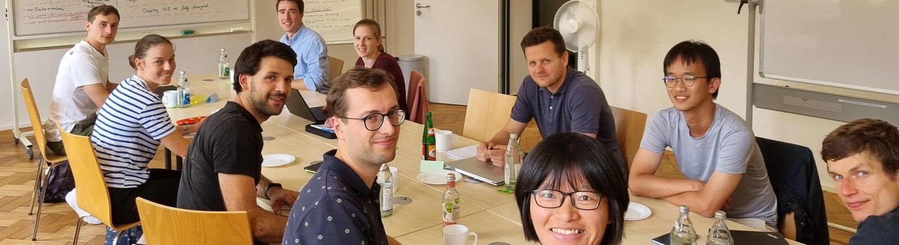

UpGrade Mobility
Structure and Members
The operational management consists of the scientific speaker, the managing director, elected representatives of the doctoral reseachers and the topic speakers.
Operational Management
Active Members
We present to you the present (post-)doctoral researchers of the UpGrade Mobility Graduate School, their associated institutes, and their PhD/research topics.
Daniel Baumann
ITIV • 2025 – Present
Reconfiguration of context-based vehicle software components in the cloud
Philipp Bühler
FAST • 2024 – Present
Testing Methods for the Simulation and Analysis of Potential Nanomaterial release during the Life Cycle of Tires
Lorenz Fehn
IRS • 2026 – Present
Proactively Addressing Environmental and Sensor Uncertainties in Motion Planning in the Context of Automated Driving
Daniel Flögel
IRS • 2024 – Present
Socially Integrated Navigation: Motion Planning in Crowded Environments
Lars Gesmann
IPEK • 2025 – Present
Consistency in Cross-Generational Engineering of Cyber-Physical Systems
Josephine Grau
IFV • 2025 – Present
Automated Replication of Dynamic Freeway Control Systems for Traffic Simulations
Nathan Hagel
KASTEL • 2025 – Present
Morten Harter
KASTEL • 2025 – Present
Manuel Hess
IRS • 2025 – Present
Jiang Bowen
KASTEL • 2025 – Present
Benedikt Jutz
KASTEL • 2025 – Present
Minakshi Kaushik
KASTEL • 2025 – Present
Lina Kluy
IFAB • 2025 – Present
Empirical Investigation of Human Behavior, Experience and Information Processing in Intelligent Assistance Systems
Michael König
FAST • 2025 – Present
David Kraus
ITIV • 2024 – Present
Automotive edge computing using service-oriented architecture to outsource safety-critical functions
Jakob Krenn
ECON • 2025 – Present
Arne Lange
KASTEL • 2025 – Present
Luca Lanz
FAST • 2025 – Present
Nikola Lukezic
ITIV • 2025 – Present
Adaptive Methods of Collective Perception for Increased Safety in Driving Scenarios
Vitus Lüntzel
ITIV • 2025 – Present
Context-aware incremental quality analyses for cyber-physical systems
Jana Mayer
ifGG • 2025 – Present
Muhammad Minhas
KASTEL • 2025 – Present
Ann-Therese Nägele
ITIV • 2025 – Present
Dirk Neumann
KASTEL • 2025 – Present
Alexandra Nick
IFAB • 2024 – Present
Ergonomics of Teleoperation for Automated Vehicles - Requirements, Tasks, and Challenges for Remote Operators
Philip Ochs
KASTEL • 2025 – Present
Hubert Padusinski
FZI • 2025 – Present
Validation of machine vision functions for highly automated driving systems
Promit Panja
KASTEL • 2025 – Present
Consistency of data-defined models for modeling and verification of safety specifications of cyber-physical systems
Romain Pascual
KASTEL • 2025 – Present
Tobias Pett
KASTEL • 2025 – Present
Convide: Consistency in the View-Based Development of Cyber-Physical Systems
Ben-Micha Piscol
IRS • 2023 – Present
Validation of learning methods for trajectory following control for highly automated vehicles
Joshua Ransiek
FZI • 2024 – Present
Automation of software tests through the use of reinforcement learning
Christian Sand
ECON • 2025 – Present
Stefan Schläfle
FAST • 2021 – Present
Influence of Vehicle operating conditions on tire-road particulate emissions
Luca Seidel
ITIV • 2025 – Present
Online Confidence Assessment of Sensor-Based Automated Driving Functions
Rahul Sharma
KASTEL • 2025 – Present
Kevin Simon
FAST • 2025 – Present
Improved detection of emergency vehicles through autonomous vehicles
Terru Stübinger
KASTEL • 2025 – Present
Carsten Thümmel
IPEK • 2025 – Present
Monitoring between Strategic Foresight and Product Engineering
Francesco Urbano
IPEK • 2025 – Present
Experimental and model-based analysis of particulate matter emissions from dry-running friction systems under varying operating conditions
Thomas Völk
IPEK • 2025 – Present
Methods and Processes for Agile Interdisciplinary Design through Consistency in the Product Development of Cyber-Physical Systems
Michael Walz
IFL • 2025 – Present
Alumni
Christopher Bohn
IRS • 2021 – 2025
Berechnung garantiert erreichbarer Zustandsmengen für die Bewegungsplanung hochautomatisierter Fahrzeuge
Sofie Ehrhardt
IFAB • 2021 – 2024
Please let me merge – Communication during lane changes on motorway slip roads
Julia Gandert
TVT • 2022 – 2026
Investigation of the Influence of the Production Parameters on the Thermal Transport in Electrodes for Lithium-Ion Batteries
Felix Pfaff
IPEK • 2021 – 2025
Evolutionary principles supporting synthesis of future generations of products and systems
Silvan Scheuermann
ETI • 2021 – 2024
Measurement and upgrading of motor windings for use with SiC semiconductors and high voltage levels
Tobias Schulz
FAST • 2021 – 2023
Application of machine learning methods in the condition monitoring of safety-relevant sensors and actuators
Dominik Stepien
HIU • 2021 – 2023
Synthesis and development of electrolyte systems based on ionic liquids for lithium metal batteries